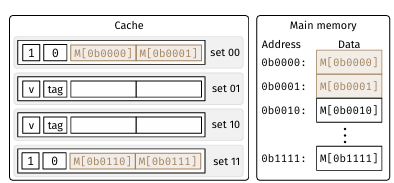
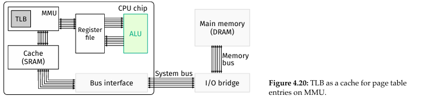

Memory
4.1
Look at figure 4.0. Over the years, CPU cycle time has gotten shorter meaning faster instructions, but memory access time (DRAM) has not. So the gap between CPU and memory is increasing.
assume a is int array with length n, the code adds all elements of the array together
int sum = 0;
for (int i = 0; i < n; i++) sum += a[i];
return sum;
spacial locality: data with nearby addresses used closely together, in the example code this would be the array's elements temporal locality: recently referenced data likely to be used again, in the example code this would be sum
C is a row-major order language meaning when handling two dimensional arrays, it stores rows next to each other. column-major order languages such as FORTRAN store columns next to each other.
Given these two example C programs, which one has better locality?
int sum_array_rows(int a[M][N]) {
int i, j, sum = 0;
for (i = 0; i < M; i ++)
for (j = 0; j < N; j ++)
sum += a[i][j];
return sum;
}
int sum_array_cols(int a[M][N]) {
int i, j, sum = 0;
for (j = 0; j < N; j ++)
for (i = 0; i < M; i ++)
sum += a[i][j];
return sum;
Because C is a row-major order language, sum_array_rows() has better locality in C because the inner loop accesses elements stored together. This is called stride-1 reference
sum_array_cols() needs to skip over N elements in each iteration since columns are not stored as closely together in C, meaning it has a stride-N reference. In column-major order languages, sum_array_cols() would have better locality.
Caching is the concept of if something is used frequently and together, to load them to a separate device that is faster than memory just once, and put them back in memory after.
Look at 4.1, disk seek is almost 10^9 times slower than cpu cycle time. Programs stored on the hard drive are sent to memory, making running programs much faster.


The faster a storage device is, the more expensive it is to store a byte. So faster devices end up storing less.
Registers are inside the CPU, so they are the fastest storage, but that means they are also the most expensive. Hence why there are only 32 in ARMv8.
If the table of devices(4.1 above) were to be organized in a diagram, it would be the pyramid in 4.4(above) called the memory hierarchy. The device at level k in the image is a cache of the device at level k+1. As k increases devices get larger, cheaper, but are also slower. The device at k stores data frequently used from k+1, so k-1 can access it faster. If data requested by k-1 is not at k, it will retrieve it from k+1.
4.2
In order to do computation, variables and programs must be loaded from memory. It takes 10^2 (100 clock cycles) to load data from main memory.
Memory Transactions
RAM is special because given an address we can jump right to that address. Other storage devices require reading from the beginning.
4.5 shows the bus structure between a CPU chip and main memory. It has 3 main components besides CPU and main memory. System bus contains three major parts: control bus, address bus, and data bus; I/O Bridge connects I/O devices to the system bus to be controlled and used by CPU chip; Memory Bus contains address, data, and control bus aswell, which has been covered earlier in Chapter 3. The role of control bus here is to indicate if this is a read or write transaction
Read Transactions
Primarily done by LDR instructions in ARMv8
Ex: LDR X10, [X9] will read the value at X9 first, then put it on the system bus and memory bus through the bus interface and I/O bridge. Then it grabs the value stored at X9 in memory, and transfers back the same path and stores the value into X10.
Write Transactions
Primarily done by STR instructions in ARMv8.
Ex: STR X10, [X9] will work very similar to a read transaction, but instead both X9 and X10 are read, and X9 still goes on the memory bus, but X10 will go on the data bus. Then it will be stored in main memory.
Adding the Cache
Memory transactions are too slow for the processor. Cache is built of Static Ram/SRAM which is more expensive but faster. It is also smaller than main memory.
4.6 shows what 4.5 looks like once a cache is added on the CPU.
Here's an example of how a cache works, use figure 4.7 as a visualization
At the start the cache is empty. Then we run LDR X0,[X1]. Because the memory data at address X1(M[X1]) is not in the cache, we go to memory to retrieve it.
When we retrieve the data, we don't just bring the data but also a block of data which is the data at neighboring addresses in memory.
EX: if we load a double word that spans 0x1000 to 0x1008, we would copy all data from 0x1000 to 0x1040 to the cache, which is a total of 8 double words. (remember addresses are in hex, 40 in hex = 64, 64/8 = 8)
Now when the CPU tries to read data in-between addresses 0x1000 and 0x1040, we can just copy it from the cache instead of going to main memory. When this happens, we say it's a hit
If the CPU tries to read data that isn't in-between addresses 0x1000 and 0x1040, then we go back to main memory, and grab a new block of data. This new block of data overwrites the current block of data in the cache. This is called a miss
This is why good special locality is important. Since the cache stores a chunk of memory, if the memory we are accessing together is close together, then the cache is much more likely to have a hit than a miss.
Memory Organization
In a cache, those blocks of data are called lines. A cache has 3 parameters, S, E, and B. A cache will always have S=2^s sets, and each set will have E=2^e lines.
A line contains the following avalid bit referred to as v which indicates if the data stored in the line is valid or not. As well as B=2^b bytes that store the actual cached data copied from memory.
Total capacity of a cache = S*E*B bytes. 4.8(bottom next msg) shows an image of a cache.
Given an address, to check if the data is in the cache, the address split into three smaller parts. t bits for the tag, s bits for the set index, and b bits for the block offset.
First t bits are the tag. Next s bits are the set index. Last b bits for block offset.

From there we perform the following steps
- Use the set index in the address to locate a set.
- Compare the tags in all lines of the set with the one in the address. If a tag is a match, that is a hit, the data is in that line starting from the block offset. If there isn't a match, it's a miss, so we go and copy the data from memory instead.
Direct-Mapped Cache
- Simplest form of cache
- Each set has only 1 line
- Example on making a direct mapped cache below
- Assumptions we can make for the example
- Main Memory uses 4 bit addresses, so total of 16 bytes of data, each byte is uniquely addressed.
- Mini cache is direct mapped so 1 line per set
- Cache has a total of 4 sets, so s=2
- Each set can store 2 bytes of data so b=1
- Each time we retrieve 1 byte of data -The cache starts empty
Pictures are attached at bottom of message.
Because each address has 4 bits, and s=2 and b=1, t=4-2-1. So t=1
Now lets run the requests one at a time in this order: 0b0000, 0b0001, 0b0111, 0b1000, and 0b0000
Since we know the first t bits are for the tag, the next s bits are for set index, and the last b bits are for the block offset, and all bits are 0 for this address, all of those values will be 0.
Since the cache is empty, Set 00 has nothing, so it is empty, so it is a miss.
So we go to memory and grab M[0b0000] and M[0b0001], we grab both because in the assumptions we know each set can store 2 bytes, so we grab 2 bytes of data.
After that we load 1 byte starting at offset 0 from that line, so M[0b0000] goes back to the register files.
Next we load 0b0001, and it's 2 bits after the tag are 0b00, so we index to set 00. We notice the valid bit is turned on, and the tag also matches what is in the data. So we have a hit. Then we index by 1 since the last bit in this example is the block offset and we send the data which is M[0001] to the register file.


Now for 0b0111, the set index becomes 0b11, so we have a miss. So we go to main memory and copy both M[0110] and M[0111] to the cache. Then we set the valid bit to 1, set the tag to 0, and since the block offset is 1, we copy the M[0111] to the register file.
The reason why we copied M[0110] and not M[1000] is because the last bit is the block offset and M[0111] is occupying the block offset at 1, so we copy a value with the same tag and set index but at a block offset of 0.
Next is 0b1000. It has a set index of 0b00 so we go to set 00 and compare the tags. Since both of the tags of the values in set 00 are 0, and 0b1000 has a tag of 1, we have a miss. So we go to main memory, copy M[0b1000 and M[0b1001 to the cache.
Lastly is 0b0000 again. So we index to set 00, compare the tags and notice the tag is now 1, so we have a miss. So we must go to memory, copy M[0b0000 and M[0b0001 again and overwrite the values in set 00 and update the tag.
ngl im skipping real world example bc its the same stuff, if you don't understand direct mapped caches see 4.2.3.3 in the textbook for a real world example
Associative Cache
In a direct mapped cache, if ther is a conflict we must go to the memory and replace the dat ain the cache.
An associative cache has 2 lines per set, one with a tag of 0, and the other with a tag of 1.
C is the capacity of the cache, given a fixed value for C, we can adjust the three parameters to have different types of caches.
For example E=1 is a direct mapped cache, S=1 is a fully associative cache, and any other combinations is an E-way set associative cache
The three different types of caches are shown in figure 4.12
For a direct mapped cache, since E=1, we'll have C=8=S*B capacity. Since B=2, and there are 4 sets.
For a 2 way set associative cache Reduce the number of sets in half, so for this example S=2, but to keep B=2, there has to be 2 lines per set, so C=8 and S=E=B=2.
Now that there is only two sets, only 1 bit is needed for set index, so LSB is still block offset, and instead the two MSB are for the tag.
For a fully associative cache to keep capacity unchanged, 4 lines are needed. Since LSB is the block offset and we don't need a set index, the 3 MSBs of the address are used as the tag.
E-way set associative caches and 2-way caches have 2 possible problems.
If data is requested from the cache and empty lines are in the set, which line do we put the data in? A simple solution is to just put it in the next available line.
When there is a conflict, since each line has two bits per tag, there are 4 possible tags for each set total. Because there are only 2 lines per set, not every possible tag will be in a set. So which line do replace?
For the sake of this class, we will replace the earliest used line.
Above we discussed read transactions with a Cache
The issue with write transactions is due to multiple copies throughout the entire system. For example lets run STR X0, [0x1000]. This writes the data stored in X0 at memory address 0x1000 if the data at this address has already been copied in the cache, do we only update the cache or the memory or both?
If we update only the cache, resulting in the cache and memory having two different values. If the cache gets replaced the new value will be gone and the memory still has the old value.
If we only update the memory, the delay is too long, and there will be data inconsistency. EX: Next is LDR X0, [0x1000 would grab the data from cache, which is the old value instead of the new one in memory.
Write transactions also have a hit and miss. They are defined the same as read transactions (above).
There are 2 ways to deal with a write hit Write-Through: write to both main memory and cache. Write-Back: update the cache only first, and update main memory once the line is replaced.
There are 2 ways to deal with a write miss. Write-Allocate: copy the line into the cache from main memory, then update the data in the cache No-Write-Allocate: write straight to main memory without ignoring the cache.
Usually write through is paired with no-write-allocate, and write-back is paired with write-allocate.
For write through + no-write-allocate, both cases only deal with main memory. For write-back + write-allocate, both deal with cache first only and update main memory once the cache line is replaced.
Multi-Level Caches
L1, L2, L3, and so on are levels of cache. Lk holds part of the data copied from Lk+1, Lk is smaller and more expensive than Lk+1. Figure 4.13 shows an example of what an ARM chip looks like.
When buying a computer, terms like "8-core" or "quadcore" mean having multiple CPUs with the basic elements in this course. In recent architectures, L1 is actually two caches, d-cache for data, and i-cache for instructions.
If there are multiple cores in one processor package, it is common for there to be an L2 cache that connects all the cores. It is larger and slower than L1. Sometimes a computer can even have multiple processor packages, so each one is connected by one even larger and slower L3 cache. L3 is external in this case because it is not on a particular processor chip.
Evaluation Metrics
Miss rate = Times of data not found in cache/Total memory reference
An example of this is given a bitmap image of pixels, each pixel is represented with the struct below.
We will use a direct mapped cache of 128 bytes with 8 byte blocks.
typedefstruct{
unsignedchar r;
unsignedchar g;
unsignedchar b;
unsignedchar a;
}
pixel_t;
pixel_t pixel[16][16];
Let's assume sizeof(unsigned char) == 1
pixel begins at memory address 0,
The cache starts empty
Variables i and j are stored in registers and accessing them won't cause a cache miss.
Now lets find the miss rate for the code below.
for(i=0;i<16;i ++){
for(j=0;j<16;j++ {
pixel[i][j].r =0;
pixel[i][j].g =0;
pixel[i][j].b =0;
pixel[i][j].a =0;
}
}
To do this we determine the memory and cache structure. Since C is a row-major-order language, the storage of matrix pixel_t will have rgba right next to eachother, repeating 1024 times, each one being represented by [i][j], with bytes that have consecutive [j] values being stored next to eachother.
Since we are using direct mapped cache, E=1, and each line has 8 = 2^3 bytes, so b=3. We also have a total capacity of 128=2^7 bytes, so we have 4 sets.
In the inner loop there are 4 write statements, so each iteration has 4 memory accesses. Each element in the memory also takes 4 bytes, while each line in the cache takes 8 bytes. So we can store two consecutive elements in each line. In this example it is [i][j] and [i][j+1]
In the inner loop, the first write in the first iteration will always be a miss. This is either due to there being no cache, or the line it is at being replaced. Then all eight bytes starting from pixel+i+j will be carried into the cache. This means the next 7 writes will all be hits.
It is possible to rewrite so it is identical in cache and memory access. It would become the image attached.
Knowing that 1/8 writes is a miss, we have a miss rate of 12.5%.
Cache friendly code
When we learned Big-O notation, we were told to ignore hardware differences.
We are tasked with writing code for matrix multiplication between two matrices a and b of the same size nXn. Three different implementations all with O(n^3) runtime are listed below. Each element of the matrix takes 8 bytes.
/* ijk */
for (i = 0; i < n; i ++) {
for (j = 0; j < n; j ++) {
sum = 0.0;
for (k = 0; k < n; k ++){
sum+=a[i][k]*b[k][j];
}
c[i][j] = sum;
}
}
/* kij*/
for (k = 0; k < n; k ++) {
for (i = 0; i < n; i ++) {
r = a[i][k];
for (j = 0; j < n; j ++){
c[i][j] += r * b[k][j];
}
}
}
/*jki*/
for (j = 0; j < n; j ++) {
for (k = 0; k < n; k ++) {
r = b[k][j];
for (i = 0; i < n; i ++){
c[i][j] += a[i][k] * r;
}
}
}
Now to analyze the miss rates of each one, assume the block size of the cache is 32 bytes, and can't store multiple rows. Also n is very large.
For method ijk, elements a and b are accesed each time, and for a[i][k] the row-number is fixed at i while k is constantly changing from 0 to n-1. Because the block size is 32, and each element takes 8 bytes. For every four elements, the first will hit and the other 3 will miss, leaving a miss rate of 25%. Since matrix-b gets each element column wise, the miss rate is 100%. The inner loop does not involve matrix c, so it is ignored.
For method kij, the inner loop does not involve matrix a, so it is ignored. Element b[k][j] iterates through all of the elements in each row, so the miss rate is also 0.25. Matrix c does the same so it's miss rate is also 0.25.
For jki, matrix b is not in the inner loop, so it is ignored. For matrices a and c, the inner loop iterates by the column, so both have a miss rate of 100%.
Figure 4.14 shows a graph of each method's cycles depending on the size of n.
4.3 Virtual Memory
The addresses recieved by cache are called physical addresses, they are real addresses used in the real main memory.
Laptops currently are usually 16GB-8GB of physical RAM, which is shared among all programs running in the system. 16GB is not enough to run multiple applications. For example just Shudong's music player on macOS needs 392GB of memory space.
Locality also applies to computer programs as it does to computer data. For example if we are given assembly instructions they are usually stored close to eachother. Because of this branching does not send us too far in memory from where we branched from.
A motivating example
Lets assume our memory can only store 48 bytes and we want to run two programs simultaneously. The two programs have a total of 15 instructions. For the two programs there is a total of 60 bytes at minimum(15*4 bytes)
Locality teaches us that the executed instructions of a program are stored next to each other in memory, so the solution is to load parts of a program into memory, and when those parts have been executed, we swap them out and move to the next parts.
This is represented in 4.15-->4.17 A real world example of this is we may have a lot of books, but can only bring 5 to campus. So we would only take the books we need to bring that day, and if on a different day we need a different book, we just swap a book in the bag. In that example books are the program and the bag is phyiscal memory.
The operating system provides virtual memory which is a memory management mechanism.
So far in this course all of our statements involving memory addresses besides ones which use a cache refer to virtual memory. If a virtual memory has n bits, each program will have the same set of N=2^n -1 unique virtual addresses, called a virtual address space
Physical memory is byte addressed, if a physical memory has m bits, then then it has M=2^m -1 unique addresses is called the physical address space.
Despite the equations being the same, N > M because virtual memory space simply has more bits.
It is possible to chop virtual memory space into virtual pages and only load some virtual pages into physical memory. Those virtual pages then become physical pages
If a processor needs data or code in a page that isn't present, then it needs to find a page to swap out. If it can't, then a delay happens. This is basically lag from opening too many apps.
Physical pages are not dedicated to a specific process, so pages from two processes are all over the place and intertwined.
There is no order in physical memory, a prage in a low virtual memory address doesn't end up in a low physical memory address.
The pages are of equal size.
How does a processor know which physical address corresponds to which virtual memory address in which process? This uses concept switching which is not in this course, thats in OS.
Address Translation
The procedure of finding a physical memory address to a given virutal memory address is called address translation
Assume the virtual memory space can be defined as V={0,1,...,N-1} and the physical memory space as P(0,1,...,M-1).
A function can be defined as MAP: V->P∪{ ∅}
a' = MAP(a) where a' is the translated physical address. If a' ∈ P, the virtual address can be successfully mapped to physical memory, and the data can be found there. If a' = ∅, the virtual address can't be mapped to physical memory, this can happen if we are trying to use a variable that's currently in a virtual page but that page hasn't been loaded to physical memory yet. If the address can be mapped, it is a page hit, otherwise it is a page fault.
Translation occurs in a special hardware called the memory management unit (MMU), adding a MMU to the CPU looks like figure 4.19
MMU takes in a virtual memory address, and translates it to a physical address and sends it to the cache. It's managed and programmed by the operating system.
For the MMU to translate addresses, it just looks it up using the page table which is a 1-1 map stored in the main memory. It has two columns, the first being valid bit, and the other being Physical Page Number (PPN)
Each row is called a page table entry, the index to each page table entry is called the virtual page number (VPN). An example is given a virtual address we know the VPN of is 2, by looking it up in the table attached as an example, we know that the virtual page is located at address starting from 0xCC00 in physical memory. The valid bid indicates it's actually in physical memory and if it is 1 we have a page hit, and if it is 0 we have a page fault.
When there is a page fault, the main memory will pick a page called the victim page and evict it to secondary storage such as a hard drive, then the page we need will be taken back to main memory from the hard drive and the address will be translated by the MMU.
A virtual address of n bits can be split into 2 parts. Bits n-1 -> p are the VPN, while bits p-1 -> 0 are the virtual page offset (VPO)
The VPN is used to index to a row in the page table, and if the valid bit at that row is a 1, then it's a hit. From there we index by the VPO to get the physical page of that row. The VPO then becomes the physical page offset (PPO) without change, and PPN is pulled from the table. The two are combined to make the physical address.
If PPO = 0, we want the first byte of that page. If PPO = 1600, we want the 1601th byte of that page. p bits are needed to represent the offset, and each byte has it's own address so there will be 2^p bytes stored. Therefore the page size P=2^p
To prevent the MMU from being overwritten in the cache because it is constantly needed, a TLB or translation lookaside buffer can be installed on the MMU as seen in figure 4.20. The TLB is a set-associative cache where each line stores one page table entry.
The VPN is then split into the TLB tag (TLBT) and the TLB index (TLBI)
These two parts index a page table entry (line) in the TLB.
From Virtual Address to Data
Lets say we wrote char c = *ptr; //ptr is a char pointer
Upon compiling this line becomes LDRB W0, [X1] in assembly.
In that example X1 is the virtual memory address, assume X1=0x1DDE and the following.
Memory is byte addressable
Virtual Addresses are 16 bits wide
Physical Addresses are 13 bits wide.
Page size is 512 bytes.
TLB is an 8-way set associative with 16 entries.
The cache is a 2-way set associative with a 4 byte line size and 16 total lines.
First 32 pages of TLB are shown below in table 4.3
First we decide bit representations of virtual addresses, this is done by figuring out which part is VPN and which part is VPO, this can be found using the page table and TLB.
We know 512 = 2^9 bytes, so 9 bits are needed to represent page offsets. So bits [8-0] are VPO and the remaining 7 are VPN.
VPN has TLBI and TLBT, and since TLB has only 2 sets, only 1 bit is needed to index the TLB. So bit 9 becomes TLBI, and the first 6 bits become TLBT.
Next we write out and parse the virtual address in binary
Now that the components of the virtual address have been identified, we can turn the address given at the start into binary and label the parts using the bit subsets we found in the previous step.
Next we index into TLB and in this example we index into set 0 to see if any matches our TLBT of 0x07 in this example. None do, so we have a TLB miss, so VPN is used to check the page table. MMU will go to main memory and fetch the page table entry given VPN.
Looking at table 4.3 we can see that the page table entry for 0x0E has a PPN of 0x1 And it's valid bit is 1, so we have a page hit. MMU takes this page back and translates it to physical address.
Next is translate to physical address. We have the PPN, so we put it in the MMU and attach it with VPO to form the physical address. The result is 0x11DE. This is where ptr points to in physical memory.
Next we write out and parse the physical address in binary and identify the cache components. In this example cache has 8 sets, so we need 3 bits for set index, and each line has 4 bytes, so 2 bytes for block offset. 13-2-3 = 8, so 8 bits for tag.
Visit the cache using the parameters generated in the previous step, and determine if we have a cache hit or miss. If we have a hit (in this example we do), the byte is brought back to the CPU and stored in W0,
If we had a miss, we'd have to go to memory, evict the line with tag 0x1E in set 7, and write the line in cache back to memory assuming we are using write-allocate protocol, and copy the line we want to cache.